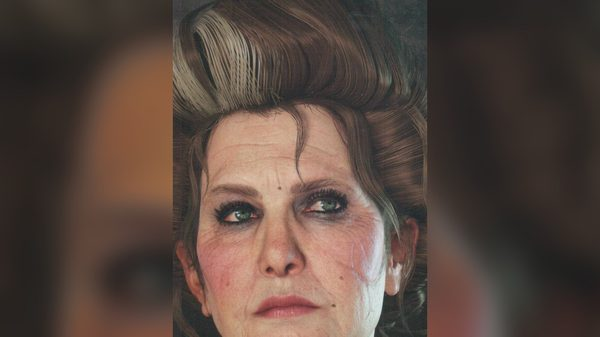
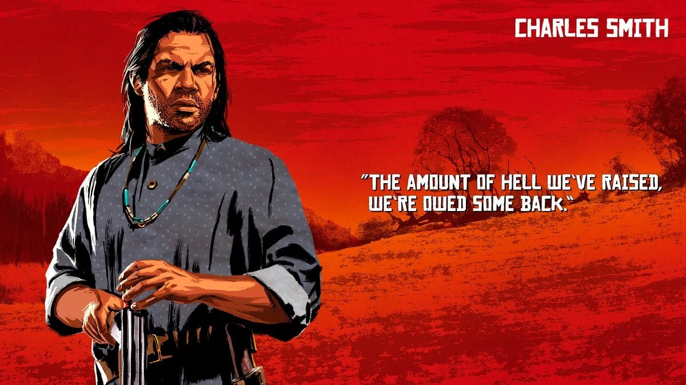
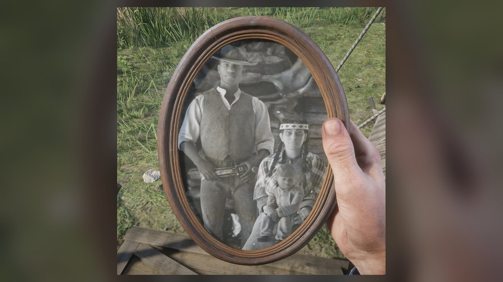
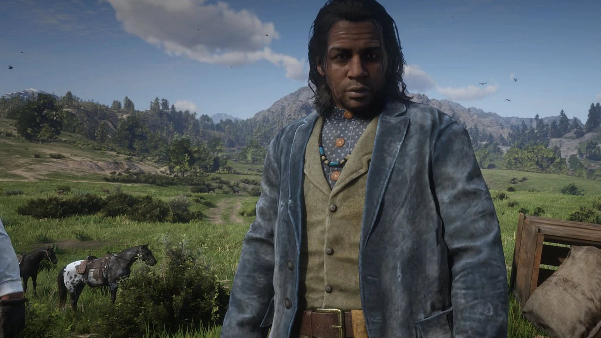
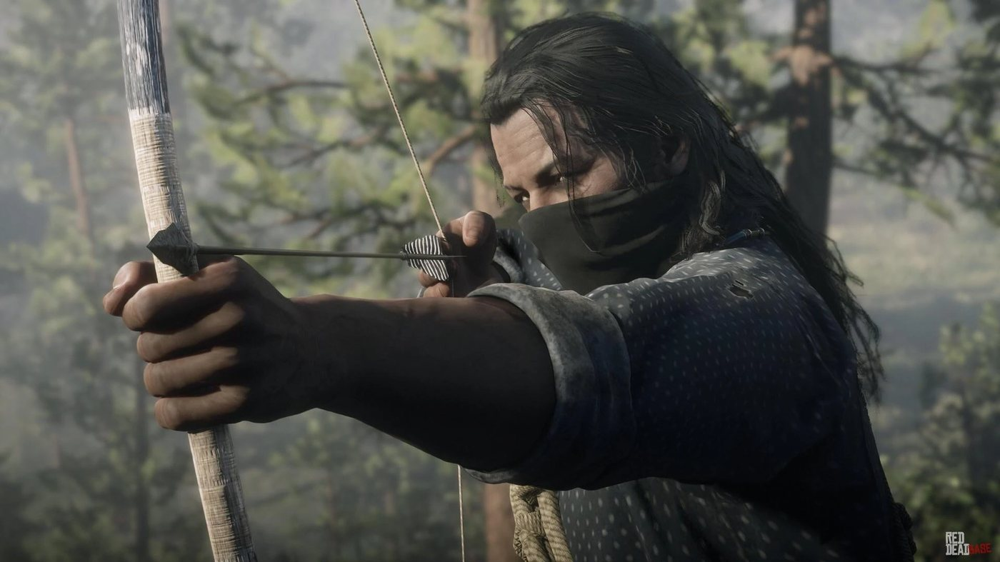
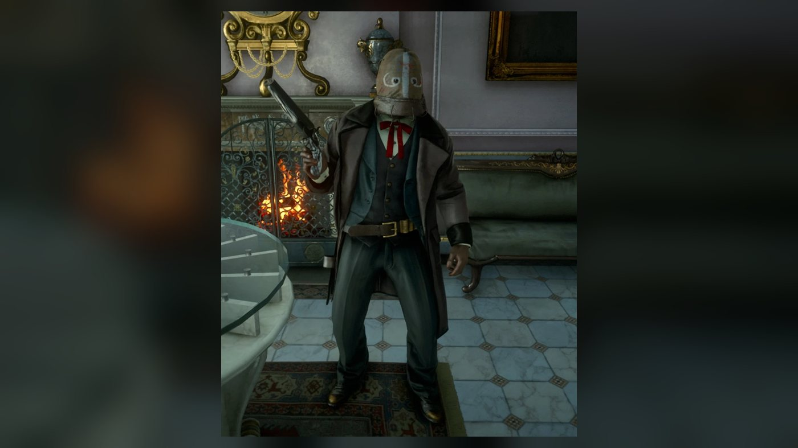
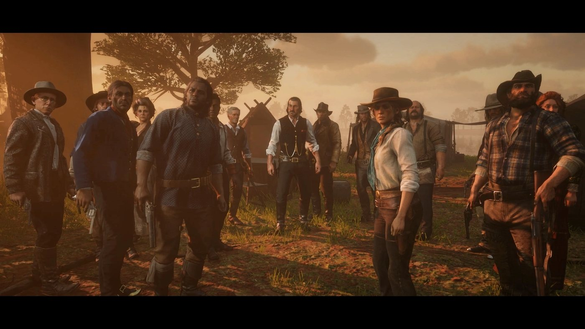
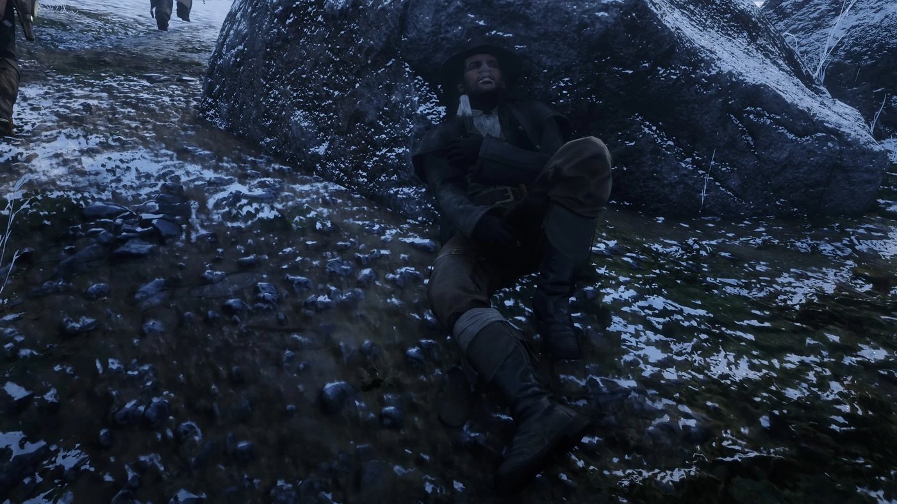
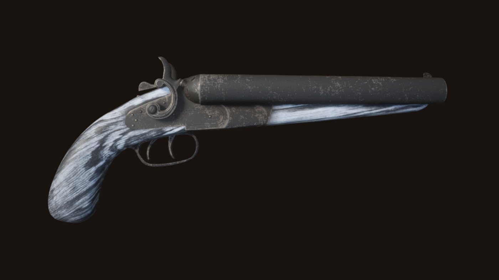

Personnage · Gang Van der Linde
Charles Smith
Charles Smith est chasseur et pisteur au sein du gang Van der Linde dans Red Dead Redemption 2 (2018). Fils d'un père afro-américain et d'une mère amérindienne, il rejoint le gang environ six mois avant le début de l'histoire. En 1899, il aide les Wapiti et, dans "My Last Boy", choisit de rester auprès d'eux, avant l'effondrement du gang. En 1907, il aide John Marston à bâtir son ranch de Beecher's Hope.
Il est interprété par Noshir Dalal, qui lui prête sa voix et ses mouvements en capture de performance.
- Naissance
- Non précisée dans le jeu
- Statut
- En vie en 1907 ; sort ultérieur inconnu
- Nationalité
- Américaine (père afro-américain, mère amérindienne)
- Affiliation
- Gang Van der Linde (fin 1898 à 1899), famille Marston (1907)
- Rôle
- Chasseur, pisteur et homme d'armes du gang ; boxeur à Saint-Denis en 1907
- Famille
- Mère sans nom (enlevée par des soldats), père sans nom, oncle sans nom
- Jeux
- Red Dead Redemption 2
- Voix
- Noshir Dalal
Biographie
Origines
La présentation officielle du gang Van der Linde par Rockstar Games le décrit ainsi, dans sa version française : « Relativement nouveau dans la bande, Charles est un homme discret et réservé qui se montre extrêmement compétent dans tout ce qu'il entreprend et qui s'avère quasiment imbattable au combat. » Elle conclut : « Un homme décent et honnête qui n'en est pas moins redoutable. » Les jeux ne donnent ni sa date ni son lieu de naissance. Charles évoque ses premières années devant Arthur Morgan et Hosea Matthews en 1899, dans "Eastward Bound". Son père était noir, sa mère amérindienne. D'après ce qu'on lui a rapporté, son père a vécu un temps parmi le peuple de sa mère, comme plusieurs autres hommes libres.
La famille ne reste pas. Quand la tribu est chassée de ses terres, le père, la mère et l'enfant fuient ensemble. Charles dit avoir été trop jeune pour en garder beaucoup de souvenirs, et n'avoir jamais cessé de fuir depuis. Deux ou trois ans plus tard, des soldats capturent sa mère et l'emmènent. Le père et le fils ne la reverront jamais. Tous deux errent alors d'un endroit à l'autre. Charles décrit son père comme un homme très triste, sous l'emprise de l'alcool. Vers treize ans, Charles part seul. En 1899, il avoue ne même pas savoir s'il a une tribu, en tout cas pas une dont il se souvienne. Selon le Red Dead Wiki, une photographie le montre bébé, entre sa mère et son père.
Un autre parent apparaît dans ses souvenirs. Quand Charles demande à Arthur de lui rapporter de l'Oleander Sage, une sauge au laurier-rose, il explique, selon le Red Dead Wiki, qu'un oncle lui a appris enfant à en tirer du poison pour ses flèches. Après avoir quitté son père, Charles vit seul pendant des années, de place en place. Le Red Dead Wiki indique qu'il passe par plusieurs gangs au cours de ces années. Cette vie solitaire l'a usé : en 1899, il confie à Arthur l'avoir menée "for a long time" (longtemps) et en avoir "done with it" (fini), car un homme seul se demande toujours si quelqu'un va le tuer pendant son sommeil. Il a rejoint le gang Van der Linde environ six mois avant le début de l'histoire : au printemps 1899, Arthur estime qu'il est avec eux depuis "Five, six months" (cinq ou six mois), et Charles confirme. Le Red Dead Wiki situe son arrivée vers novembre 1898, quand le gang traversait les Grizzlies.
Red Dead Redemption 2 (1899)
Chapitre 1 : Colter
Charles arrive à Colter la main blessée. Dans "Outlaws from the West", une fois le gang arrivé dans cette ville minière abandonnée en pleine tempête de neige, Charles rejoint Dutch et Arthur avec deux chevaux et lance : "You need horses?" (vous avez besoin de chevaux ?). Arthur part sur la jument de Charles, Taima. Dutch lui ordonne de rentrer : "You need to rest that hand." (il faut que tu ménages cette main). Charles répond "I'll live" (je survivrai), et Dutch insiste : "Get indoors, son! I... we, need you strong." (rentre, fiston ! J'ai... on a besoin que tu sois solide). Dans "Old Friends", Dutch le laisse garder le camp avec Hosea et Pearson pendant que les autres attaquent les O'Driscoll. Le raid ramène un prisonnier, Kieran Duffy ; selon le Red Dead Wiki, Charles est ensuite chargé des chevaux et de sa surveillance.
Dans "The Aftermath of Genesis", Charles surprend Pearson et Arthur en train de se disputer sur le manque de vivres et coupe court : "Enough of this. We'll go find something." (ça suffit, on va trouver quelque chose). Incapable de bander un arc avec sa main blessée, il confie le sien à Arthur, en lui expliquant qu'un coup de feu ferait fuir tout le gibier à des kilomètres, et ajoute : "You're never too old to learn... I imagine." (on n'est jamais trop vieux pour apprendre... j'imagine). En route, il assure aller bien "apart from this hand. Stupid mistake." (à part cette main, une erreur stupide), et compte sur un ou deux jours pour qu'elle guérisse. Il avoue aussi ne toujours pas vraiment savoir ce qui s'est passé sur le bateau, à Blackwater. Dans la montagne, il lui apprend à lire les traces dans la neige, à avancer lentement et courbé, et à viser le cou ou la tête, "Quick and clean" (vite et proprement).
Arthur abat deux cerfs. Au retour, Charles leur fait contourner un grizzly affamé plutôt que de tenter le sort. Il interroge Arthur sur les O'Driscoll, auxquels il n'a jamais eu affaire. Il explique aussi pourquoi il reste : "Dutch is different." (Dutch est différent). Arthur répond "Dutch is certainly different." (ça, pour être différent...), et Charles reprend : "He treats me fair. Most of you do. And for a feller with a black father and an Indian mother, that ain't normally the case." (il me traite correctement, comme la plupart d'entre vous, et pour un type né d'un père noir et d'une mère indienne, ce n'est pas courant). Quand Arthur le remercie à Colter, Charles répond qu'il ne lui a montré que les bases, car l'arc "Takes a lifetime of practice to master." (demande une vie entière de pratique).
Dans "Who the Hell is Leviticus Cornwall?", Dutch charge Charles de guetter d'éventuels cavaliers et prend des nouvelles de sa main ; Charles assure que ça ira. Quand Micah revient sans cesse sur l'argent resté en arrière, Charles juge qu'il serait insensé de retourner à Blackwater, où grouillent les Pinkerton, et Dutch le fait taire. Le train arrêté, Dutch envoie Arthur et Charles faire sauter à la dynamite la voiture privée de Cornwall. Dans "Eastward Bound", Charles et Hosea soulèvent le chariot d'Arthur pendant qu'il remet une roue en place. Quand trois cavaliers apparaissent sur une falaise, Charles observe : "If they wanted trouble... we wouldn't have seen them." (s'ils cherchaient des ennuis, on ne les aurait pas vus). Le Red Dead Wiki les identifie comme Rains Fall, Eagle Flies et Paytah, de la tribu wapiti. Quand Hosea raconte comment l'armée a chassé les tribus locales de leurs terres, Charles demande : "How do you rob and kill people pleasantly? We don't, in spite of Dutch's talk." (comment on vole et on tue les gens gentiment ? On ne le fait pas, malgré les beaux discours de Dutch). Arthur l'interroge alors sur sa tribu, ce qui l'amène à raconter son enfance. Charles finit le trajet dans leur chariot jusqu'à Horseshoe Overlook, où on le voit bientôt fendre du bois.
Chapitre 2 : Horseshoe Overlook
Dans "Americans at Rest", Charles boit avec Javier au Smithfield's Saloon de Valentine quand Arthur arrive. Bill déclenche une bagarre générale : Charles brise une chaise et cogne à mains nues, et quand Bill veut sortir son arme, il réplique : "Oh come on, we can handle these fools!" (allez, on peut s'occuper de ces abrutis !). Dehors, il encourage Arthur pendant son combat contre Tommy. Dutch arrive ensuite avec Josiah Trelawny, qui a appris que Sean MacGuire est vivant et aux mains de chasseurs de primes, et envoie Charles se renseigner, "carefully" (prudemment). Dans "The First Shall Be Last", Charles et Javier observent Blackwater depuis une falaise. Pour Charles, Sean sert d'appât, à moins qu'on ne le garde pour un procès public. Quand Arthur annonce qu'il faut le délivrer tout de suite ou "cut him loose" (l'abandonner), Charles tranche : "We're not cutting anyone loose." (on n'abandonne personne).
Arthur envoie Charles sur le versant nord de la vallée. Il couvre Arthur et Javier depuis le haut du canyon, puis les rejoint pour l'assaut contre le camp des chasseurs de primes, en plaisantant au passage qu'ils pourraient aussi bien livrer Sean eux-mêmes. Après le sauvetage, Arthur avoue à Sean qu'il l'aurait laissé pourrir là "if Charles hadn't stopped me" (si Charles ne m'en avait pas empêché).
Arthur peut aussi chasser le bison avec Charles dans les Heartlands. Après en avoir abattu un, Charles explique ce que l'animal représentait pour le peuple de sa mère : "Where the bison went, my people went. They were the center of all life... we couldn't survive without them." (là où allaient les bisons, mon peuple allait. Ils étaient au centre de tout, nous ne pouvions pas survivre sans eux). Il précise que les troupeaux fournissaient nourriture, vêtements, abri et outils. Les deux hommes tombent ensuite sur une série de carcasses abandonnées, ce qui met Charles en colère. Ils remontent jusqu'aux deux braconniers responsables. Quand l'un d'eux le provoque, Charles l'abat d'une décharge de son fusil à canon scié. Interrogé par Arthur, le survivant avoue qu'ils tuaient ces bêtes pour faire accuser les Amérindiens. Arthur peut le laisser partir ou le tuer. L'épargner fait monter son honneur, et Arthur fait remarquer à Charles que l'homme pourra dissuader d'autres braconniers de recommencer. Charles, lui, s'en va.
Dans "Pouring Forth Oil III", Arthur suggère Charles pour le braquage de train monté par John ("I like Charles Smith for this kind of thing", Charles Smith, c'est l'homme qu'il faut pour ce genre de chose), et John va le chercher. Dans "Pouring Forth Oil IV", Charles vérifie que les chevaux sont détachés pour qu'ils suivent le chariot. Comme Sean ne cesse de parler, il lui lance : "Why do you have to speak so much? It's... incessant." (pourquoi tu parles autant ? C'est... incessant). Sean réplique en surnommant le trio "Sulky, Angry, Scar Face" (Boudeur, Grincheux et Balafré) ; l'infobox du Red Dead Wiki retient "Sulky" comme le surnom donné à Charles par Sean. Sur la voie, Charles assomme le mécanicien ; si Arthur abat l'homme, Charles lui demande de garder son sang-froid. Après la fuite, il se demande si les hommes de loi les ont suivis depuis Blackwater. Dans "A Strange Kindness", Dutch envoie Arthur et Charles inspecter Dewberry Creek, un endroit suggéré par Micah. Ils y trouvent un cadavre et une famille allemande dont le père a été enlevé. Arthur veut repartir ; Charles insiste pour aider. Ils suivent la piste jusqu'à Flat Iron Lake, tuent les ravisseurs et libèrent l'homme. Arthur le ramène aux siens, tandis que Charles va guider le gang vers la rive du lac, Clemens Point, un campement bien meilleur.
Chapitre 3 : Clemens Point
Selon la description de sa personnalité par le Red Dead Wiki, Charles jette Micah à terre sur-le-champ quand celui-ci le traite de "redskin" (Peau-Rouge). Dans "Magicians for Sport", Dutch envoie Arthur et Charles prendre des nouvelles de Trelawny. Ils trouvent des traces de lutte dans sa roulotte à Rhodes, interrogent deux hommes dans les bois et remontent jusqu'à ses ravisseurs, des chasseurs de primes au service de Cole Stoudemire, dans les champs de maïs près du manoir Braithwaite. Quand l'un d'eux prend Arthur en otage, Charles l'abat.
Dans "An Honest Mistake", Charles accompagne Arthur, Uncle et Bill pour attaquer un chariot qu'Uncle croit sans escorte. Le cocher travaille en fait pour Cornwall Kerosene & Tar, et les quatre hommes fuient les gardes de Cornwall dans les bois avant de se cacher dans une grange. Quand les gardes la fouillent, Bill renverse un seau et les trahit ; Charles abat l'un des gardes, Lowe, et la grange prend feu pendant l'affrontement. Sous les arbres, ils se séparent en binômes, Charles avec Bill, puis viennent à bout de leurs poursuivants et partagent le butin. Après la mort de Sean à Rhodes et la disparition de Jack, Charles se rend au manoir Braithwaite avec Dutch, Arthur, Hosea, John, Bill, Javier et Lenny dans "Blood Feuds, Ancient and Modern". Le gang tue les hommes de la famille, incendie la maison et apprend de Catherine Braithwaite que Jack a été livré à Angelo Bronte : l'enfant est soit à Saint-Denis, soit sur un bateau pour l'Italie.
Chapitre 4 : Saint-Denis
Au cours du chapitre, Charles quitte Shady Belle quelques jours pour aider Eagle Flies à libérer des membres de sa tribu envoyés en maison de redressement. Arthur propose de l'accompagner ; Charles décline. Dans "Horsemen, Apocalypses", les O'Driscoll attaquent Shady Belle après avoir renvoyé le corps mutilé de Kieran. Une fois le gang replié dans la maison, Dutch assigne leurs postes à John, Charles et Arthur. Vers la fin du combat, Charles surgit par une porte latérale, plaque un O'Driscoll au sol et l'achève à la machette, avant de rejoindre Arthur et Sadie Adler. Ensuite, Dutch charge Charles, Swanson et Pearson d'enterrer Kieran.
Charles fait partie de l'équipe de "Banking, The Old American Art", le braquage de la Lemoyne National Bank. Selon le Red Dead Wiki, il est chargé à l'intérieur de tenir les clients en respect, avec Bill et Micah. Les Pinkerton encerclent la banque ; Hosea est tué dans la rue, John est arrêté et Lenny abattu sur les toits. Charles se terre jusqu'à la nuit dans un appartement vide avec Dutch, Arthur, Micah, Bill et Javier. Sur les quais, très surveillés, il attire les Pinkerton à l'écart pour que les cinq autres puissent embarquer sur un navire à destination des Caraïbes, et reste à terre. Le Red Dead Wiki ajoute qu'il quitte la ville caché sur une diligence avant de regagner Shady Belle à cheval.
Chapitre 5 : Guarma
Pendant que Dutch, Arthur, Micah, Bill et Javier sont bloqués à Guarma, Charles reste avec le reste du gang en Lemoyne. Sadie prend les choses en main et déplace le groupe de Shady Belle à Lakay, un village abandonné du bayou, au nord-ouest de Saint-Denis et au sud-est de Lagras ; le Red Dead Wiki précise que Charles l'a aidée à organiser ce départ et à maintenir la cohésion du groupe. Toujours selon cette source, tous deux ont aussi récupéré les corps d'Hosea et de Lenny à la morgue de la ville pour les enterrer à Bluewater Marsh. Charles est à Lakay dans "Fleeting Joy", quand les rescapés de Guarma rejoignent le groupe et que les Pinkerton attaquent le village.
Dans "That's Murfree Country", Dutch estime que le gang ne peut pas aller plus à l'est et doit remonter vers le nord. Il envoie Arthur et Charles à Beaver Hollow, une grotte de Roanoke Ridge. Les deux hommes peuvent s'y rendre à cheval ou en canoë ; si le joueur ne choisit pas, Charles opte pour le canoë. En chemin, Charles raconte à Arthur la fuite vers Lakay et l'aide qu'il a apportée en son absence aux Wapitis, la tribu de Rains Fall, et lui dit que leur situation est mauvaise. Devant la grotte, ils éliminent sans bruit les membres des Murfree Brood postés dehors, puis nettoient la grotte elle-même. À l'intérieur, ils découvrent une jeune femme, Meredith Buckley, séquestrée et maltraitée par les Murfree. Arthur la ramène chez elle à Annesburg, tandis que Charles repart guider le gang jusqu'à son nouveau camp.
Chapitre 6 : Beaver Hollow
Dans "A Rage Unleashed", Eagle Flies, fils du chef wapiti Rains Fall, arrive à Beaver Hollow escorté par Karen et Javier. L'armée a confisqué les chevaux de son peuple. Charles lui rappelle qu'il a promis à Rains Fall de rester à l'écart du conflit. Dutch décide sur-le-champ de l'aider, et Charles et Arthur, méfiants, l'accompagnent. Avec Paytah et d'autres Wapitis, ils s'approchent de nuit à la rame, sans bruit, du bateau de l'armée, montent à bord et neutralisent les soldats ; Dutch envoie le bateau s'écraser contre le phare de Van Horn, et les chevaux regagnent la rive à la nage. Dutch repart avec Eagle Flies, et Charles demande à Arthur d'aller voir Rains Fall. Le chef demande plus tard à Arthur et Charles d'assister à ses pourparlers de paix avec le colonel Favours. Dans "The Fine Art of Conversation", Charles convainc un Arthur réticent de venir. Si Eagle Flies vient d'être arrêté à l'issue de "Favored Sons", Charles s'emporte en route contre l'implication de Dutch. Quand Favours fait arrêter le capitaine Lyndon Monroe pour trahison, Arthur et Charles l'échangent contre un soldat pris en otage, s'enfuient sous les balles et le mettent dans un train à Emerald Station ; Charles s'en va ensuite.
Eagle Flies est ensuite capturé et détenu à Fort Wallace. Dans "The King's Son", Charles attend Arthur à la réserve et l'envoie dans la tente de Rains Fall. En route vers le fort, Charles détaille son plan pour entrer et ressortir, et reproche à Dutch d'exploiter la situation des Wapitis à son profit. Le Red Dead Wiki a retenu sa mise en garde ce soir-là : "Any day we can die. We're about to break an Indian Chief's son out of a cavalry fort. We can both die tonight." (on peut mourir n'importe quel jour. On s'apprête à sortir le fils d'un chef indien d'un fort de cavalerie, on peut très bien y rester tous les deux ce soir). Arthur lui apprend alors qu'il est condamné. Charles lui répond : "You're lucky. You got the chance to... to do something better... My guess is maybe that's why you're here now." (tu as de la chance. Tu as l'occasion de... de faire quelque chose de mieux... C'est peut-être pour ça que tu es là, maintenant). Contrairement à Hosea, Lenny, Sean ou aux frères Callander, explique-t-il, Arthur a encore le temps de se racheter.
Les deux hommes attendent la nuit pour agir. Ils éliminent les sentinelles le long du mur à l'arc et au couteau, puis, à l'arrière, Charles lance un grappin pour qu'ils puissent passer par-dessus. Du haut d'une tour, sur une idée de Charles, Arthur tire sur une lanterne éloignée : l'incendie qui s'ensuit attire les gardes. Charles abat le geôlier, et Arthur prend les clés et détache Eagle Flies. Quand l'alarme retentit, Arthur fait sauter à la dynamite une portion fragile de la muraille. Le trio file vers la rivière, où Charles avait laissé des canoës, et descend les rapides sous le feu des soldats. Une fois à terre, Charles enfourche un cheval abandonné par un soldat et ramène Eagle Flies à la réserve.
Dans "My Last Boy", Eagle Flies arrive à Beaver Hollow avec un parti de guerre pour attaquer l'armée à la raffinerie Cornwall, malgré les supplications de son père. Rains Fall se tourne vers Arthur, qui accepte d'aider ; Charles est le suivant à s'engager, avant Dutch et la majeure partie du gang. Aux Heartland Oil Fields, Charles, Arthur et Sadie descendent avec un groupe de Wapitis rejoindre Eagle Flies, qui se bat sur une passerelle, tandis que Dutch contourne le site avec les autres. Le groupe de Charles retrouve ensuite celui de Dutch à l'entrepôt. Le gang emporte des obligations d'État trouvées dans le bureau de la raffinerie. Charles refuse sa part : "Those money, those bonds, whatever it is... I don't want a cent. There's too much blood on it." (cet argent, ces obligations, peu importe ce que c'est... je n'en veux pas un sou, il y a trop de sang dessus). Le journal d'Arthur inscrit pourtant le butin sous les initiales "A, D, C, B & S", où le Red Dead Wiki lit "C" comme Charles. Après qu'Eagle Flies a été mortellement blessé par le colonel Favours, Charles, Arthur et Paytah le ramènent à la réserve. En chemin, Arthur et Charles évoquent Dutch, qui a abandonné Arthur dans l'entrepôt, ce qu'est devenu le gang et leur consternation devant les combats entre les Wapitis et l'armée.
Arthur et Charles portent Eagle Flies dans la tente de Rains Fall, où il meurt après un dernier moment avec son père. Dehors, Charles annonce aux Wapitis qu'ils doivent partir, et décide de rester avec eux plutôt que de rentrer à Beaver Hollow. Selon le Red Dead Wiki, il les aide à fuir au Canada, hors de portée de l'armée. Arthur propose de rester aussi. Charles lui répond de repartir, car d'autres membres du gang ont encore besoin de lui. Les deux hommes s'étreignent et se séparent ; ils ne se reverront plus. Charles n'apparaît plus au camp. Il n'assiste ni à l'effondrement final du gang, ni à la découverte de la trahison de Micah, ni à la mort d'Arthur. On ne l'entend plus qu'en souvenir : dans la mission "Red Dead Redemption", avec un honneur élevé, Arthur se remémore lors de sa dernière chevauchée une phrase que Charles lui a dite vers la fin de "The King's Son". Après la dislocation du gang, Charles enterre Arthur et Susan Grimshaw : Susan à Roanoke Ridge, Arthur au sommet d'une colline des Grizzlies East, au nord-est de Bacchus Bridge.
Red Dead Redemption 2 : l'épilogue (1907)
Épilogue II : Beecher's Hope
Le jeu ne montre pas ce que Charles fait entre 1899 et 1907. En 1907, il vit à Saint-Denis et dispute des combats à mains nues, sous le nom de ring de "Lone Wolf" (Loup solitaire) selon le Red Dead Wiki. L'article de presse "Notorious Bad Man Alive" le cite parmi les membres du gang Van der Linde toujours en fuite, avec Bill, Micah et John. Dans "Bare Knuckle Friendships", Uncle apprend à John que Charles est vivant et en ville. Les deux hommes prennent le train. Au saloon ou chez le receleur, John entend parler d'un "big Indian" (un grand Indien) qui se bat dans les bas quartiers, et tous deux trouvent Charles en pleine discussion avec un organisateur. Charles croyait John mort et n'en revient pas de le voir vivant. Il parie sur lui-même, bat "Simon of Wales" et encaisse ses gains. Il avait en réalité promis de perdre ce combat à des hommes de Guido Martelli.
En accompagnant John jusqu'aux quais pour récupérer son sac, Charles parle d'Arthur. Avec un honneur élevé, il dit qu'Arthur "was a good man" (était quelqu'un de bien) et que sa maladie lui a apporté "some kind of understanding... what his life was really all about" (une forme de compréhension de ce qu'était vraiment sa vie) ; avec un honneur bas, qu'il "wasn't a good man" (n'était pas quelqu'un de bien) et que la maladie lui a donné "something to cling on to" (quelque chose à quoi se raccrocher). Il ajoute qu'Arthur repose là où il l'aurait voulu, sur une colline face au soleil couchant. John lui apprend que Micah a trahi le gang. Charles lui annonce que Leopold Strauss a été arrêté par les Pinkerton et qu'il est mort en détention ; le Red Dead Wiki ajoute qu'il a été torturé pour livrer des informations sur le gang. Sur les quais, quatre hommes de Martelli les prennent à partie, et John et Charles les abattent. Charles s'enfuit de la ville aux rênes d'un chariot, en prévenant que Martelli a le chef de la police "in his pocket" (dans sa poche). Uncle les retrouve à la sortie de Saint-Denis, et le trio rejoint Beecher's Hope.
Au ranch, dans "Home Improvement for Beginners", Charles sert le café à John pendant qu'Uncle se moque de la cabane, puis aide à l'abattre avec les chevaux : "Almost there! We got it." (on y est presque ! C'est bon). John part acheter une maison en kit à Blackwater et lui lance : "Charles, make him work. Whip him if you have to." (Charles, fais-le travailler, au fouet s'il le faut). Dans "The Tool Box", Charles, qui a entendu parler des agissements des frères Skinner dans la région, rejoint John avec deux hommes de main, Wayne et Devon, pour escorter les chariots à travers Tall Trees. Les Skinner tendent une embuscade au convoi et enlèvent Wayne. John et Charles les pourchassent et les tuent, mais retrouvent Wayne mort, attaché à un arbre. Charles explique à John les mœurs de cette bande, puis emporte le corps de Wayne pour qu'il soit enterré. Dans "A New Jerusalem", Charles et John passent plusieurs semaines à monter la maison pendant qu'Uncle donne les ordres, et tous trois trinquent une fois le travail fini. Selon le Red Dead Wiki, John dit à Charles qu'il a un foyer au ranch s'il le souhaite.
"Uncle's Bad Day" s'ouvre sur une nuit bien arrosée pour fêter la maison et la grange terminées ; John va jusqu'à courser Uncle avec Charles sur le dos. Le lendemain matin, Charles secoue John : Uncle a disparu. Des traces, dehors, montrent que les frères Skinner l'ont emmené. En suivant la piste, Charles prévient qu'Uncle sera peut-être dans un tel état que le tuer serait la seule chose à faire. Près du repaire de la bande, les deux hommes poursuivent à pied. Ils trouvent Uncle attaché à une broche au-dessus d'un feu. Pendant l'affrontement, chacun abat un Skinner qui s'en prend à l'autre. John ouvre la voie pendant que Charles porte Uncle jusqu'aux chevaux. De retour au ranch, Charles soigne les brûlures d'Uncle et explique à John que les Skinner, qui ont perdu la plupart de leurs hommes, devraient désormais les laisser tranquilles.
Dans "American Venom", Charles appelle John hors de la maison quand Sadie arrive avec une piste menant à Micah. Il accepte aussitôt : "I will." (je viens). Sur la route de Strawberry, Sadie dit qu'ils doivent bien ça à Arthur. Avec un honneur élevé, Charles doute qu'Arthur se souciait de vengeance, "especially not at the end" (surtout pas à la fin) ; avec un honneur bas, il estime que la vengeance est une chose qu'Arthur aurait pu comprendre. Sadie a entendu dire qu'il construit des maisons ; Charles répond : "When I'm not killing old friends." (quand je ne tue pas de vieux amis). Il décline son offre de devenir chasseur de primes : "I think I might get out of here. Go North. Canada. Find a woman. Start a family, if I can." (je crois que je vais partir d'ici. Monter au nord, au Canada. Trouver une femme. Fonder une famille, si j'y arrive). À Strawberry, John et lui fouillent une rive pendant que Sadie s'occupe de l'autre. Une fois Cleet retrouvé, John et Sadie le traînent sur la potence et lui font livrer le nom de Mount Hagen, pendant que Charles s'adresse aux habitants : "My boss is a licensed bounty hunter. She can do what she wants." (ma patronne est chasseuse de primes agréée, elle fait ce qu'elle veut).
Charles ouvre la marche dans le col et évoque une vieille tour de guet qui pourrait servir de camp à la bande, quand un tireur embusqué le touche. À John, qui lui demande s'il est en vie, il répond : "Just about." (tout juste). Il reste à couvert pendant que John et Sadie progressent et que John abat le tireur. Quand ils reviennent vers lui, Charles les pousse à continuer : "Move fast... or they'll come down that hill and kill us all" (faites vite, sinon ils vont descendre de cette colline et nous tuer tous), en promettant de les suivre, mais lentement. Plus haut, un homme de Micah agrippe Sadie et la poignarde ; Charles, qui les a suivis, tire sur l'agresseur et John l'achève. John demande alors à Charles de rester avec Sadie et poursuit seul jusqu'à la cabane de Micah. Après la mort de Micah, le trio rentre à Beecher's Hope. Charles, encore convalescent, assiste au mariage de John et d'Abigail aux côtés de Sadie, d'Uncle et de Jack. Quelque temps plus tard, il fait ses adieux à la famille et à Sadie, puis quitte le ranch à cheval. Le jeu ne montre pas où il se rend.
Personnalité
La description officielle du personnage par Rockstar (version française) : « Relativement nouveau dans la bande, Charles est un homme discret et réservé qui se montre extrêmement compétent dans tout ce qu'il entreprend et qui s'avère quasiment imbattable au combat. Un homme décent et honnête qui n'en est pas moins redoutable. » En jeu, il parle peu. Pendant la chasse au bison, quand elle est faite au chapitre 3, le trajet plus long lui donne l'occasion de dire à Arthur que le silence l'aide à se vider la tête. Au coin du feu, quand l'Oncle le pousse à se livrer, il répond que le silence vaut parfois mieux. Le soir de la fête donnée pour le retour de Sean, il monte la garde toute la nuit et laisse la fête, dit-il, aux professionnels.
Il ne tient pas en place. À Colter, il a la main brûlée ; quand Arthur lui demande comment il va, il répond : "I'm okay, apart from this hand. Stupid mistake." (ça va, à part cette main, une bêtise). Il n'en coupe pas moins court à la dispute d'Arthur et de Pearson sur les vivres : "Enough of this. We'll go find something" (ça suffit, on va trouver quelque chose). Quand Arthur lui conseille de se reposer, il montre le camp du doigt : "You think this is rest?" (tu appelles ça du repos ?). Dans "The Aftermath of Genesis", il explique avoir longtemps roulé seul et ne plus en vouloir, las de se demander chaque nuit si quelqu'un va le tuer dans son sommeil. Il ajoute que Dutch, comme la plupart des membres du gang, le traite correctement, ce qui n'est pas courant, dit-il, pour un homme né d'un père noir et d'une mère amérindienne. Pendant la chasse au bison, il abat l'un des braconniers qui ont laissé pourrir les bêtes tuées.
Il porte sur le gang un regard sans illusions. Dans "Eastward Bound", quand Hosea explique qu'une partie de l'armée s'est montrée "particularly, uh... unpleasant" (particulièrement, euh... déplaisante) en chassant les Amérindiens des Heartlands de leurs terres, Charles demande comment on peut voler et tuer les gens de façon plaisante, et note que le gang n'y parvient pas davantage, quoi qu'en dise Dutch. Lors d'une conversation au coin du feu, il confie que les autres semblent savoir pourquoi ils sont nés, alors que lui a l'impression d'être né pour souffrir, et qu'il se sent coincé dans ce pays. Il joue de l'harmonica.
Noms et surnoms
Dans "Pouring Forth Oil IV", Sean affuble les trois hommes qui l'accompagnent des surnoms "Sulky, Angry, Scar Face" (le boudeur, le colérique, le balafré) ; c'est le Red Dead Wiki qui attribue "Sulky" à Charles. En 1907, quand John le cherche à Saint-Denis, on lui parle d'un "big Indian" (un grand Indien) qui boxe dans les bas quartiers. Micah l'appelle "boy" (petit) et le traite de "redskin" (Peau-Rouge) dans une scène de camp. Dans une autre, Bill affirme que Charles est une "bad apple" (une brebis galeuse) depuis son arrivée. Au retour de leur première chasse, Arthur dit de lui à Pearson : "Charles is a wonder" (Charles est une merveille).
Apparence
En 1899, Charles porte ses cheveux noirs longs et détachés. Son visage, mal rasé, garde quelques cicatrices, et sa musculature est imposante. Dans les premiers chapitres, il porte d'ordinaire une chemise bleue à pois blancs, un pantalon marron et des bottes noires, avec un manteau d'hiver noir à Colter et une veste bleue sur un gilet vert à Horseshoe Overlook ; en mission, il enfile souvent un épais manteau de laine vert à capuche. Pour le braquage de la banque de Saint-Denis, il revêt un costume brun foncé et une cravate rouge. Au retour d'Arthur de Guarma, Charles a tressé ses cheveux en une sorte de crête. En 1907, ils sont de nouveau détachés, ornés d'une plume d'aigle, et il porte une chemise blanche à fines rayures, un gilet brun ouvert et un pantalon gris foncé, auxquels s'ajoutent un manteau de cuir noir et des gants noirs pour la traque de Micah.
Relations

Arthur Morgan
Lors de leur première chasse, Arthur remarque qu'ils n'ont jamais beaucoup parlé. Dutch les envoie ensemble en repérage : Dewberry Creek, qu'ils écartent au profit de Clemens Point, puis Beaver Hollow, qu'ils vident des Murfree. Dans "A Strange Kindness", Charles tient, contre l'avis d'Arthur, à retrouver le père de famille allemand disparu. Dans "The King's Son", sur la route de Fort Wallace, avant l'évasion, Arthur lui avoue qu'il est mourant ; Charles lui répond qu'il a le temps de se racheter, contrairement à Hosea, Lenny, Sean ou aux frères Callander. Selon le Red Dead Wiki, Mary-Beth est le seul autre membre du gang à qui Arthur se confie. Après les champs de pétrole, Arthur propose de rester ; Charles le renvoie vers ceux qui ont besoin de lui, et ils se serrent dans les bras. Charles l'enterrera plus tard dans les Grizzlies East.

John Marston
Dans "Eastward Bound", Charles, encore nouveau, demande à Arthur ce qui ne va pas entre John et lui. Dans une scène de camp, il ligature une flèche de John pour qu'elle vole mieux, et John lui dit qu'il est bien utile. En 1907, il croyait John mort. En marchant vers les docks, dans "Bare Knuckle Friendships", ils parlent d'Arthur : selon l'honneur d'Arthur, Charles le dit bon ou non, et affirme qu'il repose là où il l'aurait voulu, sur une colline face au soleil couchant. Charles aide ensuite John à bâtir la maison de Beecher's Hope ; John lui dit qu'il y a sa place s'il le souhaite. Il accompagne John contre Micah et assiste au mariage. Il a confié à Sadie qu'il pourrait partir vers le nord, au Canada ("I think I might get out of here") ; le générique de fin le montre quittant le ranch, et la suite de son histoire n'est pas connue.

Dutch van der Linde
Charles a rejoint le gang de Dutch en 1898. À Colter, il amène The Count et Taima à Dutch et à Arthur, et confie à Arthur qu'il ne sait pas ce que ferait Dutch s'il arrivait malheur à The Count. En route vers l'attaque du train de Cornwall, il juge insensé de retourner à Blackwater chercher l'argent caché là-bas, alors que la ville grouille de Pinkerton ; Dutch le coupe : "We go back when I say we go back" (on y retourne quand je le dis). Dans "A Rage Unleashed", il rappelle à Eagle Flies qu'il a promis à son père de ne pas se battre pour des chevaux ; Dutch rétorque : "But I made no such promise" (moi, je n'ai rien promis). En route vers les pourparlers, si "Favored Sons" vient d'être joué, il reproche à Dutch l'arrestation d'Eagle Flies. Sur le chemin de Fort Wallace, il dénonce la façon dont Dutch se sert des Wapiti, et après les champs de pétrole, il ne revient pas au gang.

Hosea Matthews
Dans "Eastward Bound", Charles et Hosea soulèvent le chariot pendant qu'Arthur remet la roue. Après que Charles a raconté son enfance, Hosea note que c'est à peu près l'âge qu'avait Arthur quand ils l'ont trouvé. Charles lui demande s'il connaît la région, et Hosea propose Valentine. Après le braquage de la banque de Saint-Denis, selon le Red Dead Wiki, Charles fait partie de ceux qui récupèrent les corps de Hosea et de Lenny à la morgue pour les enterrer à Bluewater Marsh. Arthur écrira plus tard dans son journal que la sagesse de Hosea lui manque.

Sadie Adler
À Colter, Charles trouve à la veuve du ranch Adler "a wild look in her eye" (un regard farouche) et plaisante : elle pourrait bien régler leur compte au prisonnier O'Driscoll. Dans "Horsemen, Apocalypses" (chapitre 4), après que Sadie a tué trois O'Driscoll au couteau, il les rejoint, elle et Arthur, en fin de combat et tue un O'Driscoll à la machette. Pendant que le groupe de Dutch est à Guarma, tous deux déplacent le reste du gang à Lakay. En 1907, elle lui apporte, ainsi qu'à John, la piste qui mène à Micah ; en chemin, elle lui propose de devenir son assistant, et il lui confie son projet de partir au Canada fonder une famille. Sur le mont Hagen, blessé, il abat l'homme qui la poignarde. Il quitte Beecher's Hope avant elle.

Abigail Marston
En 1907, il aide à construire la maison de Beecher's Hope, le ranch que John a acheté pour elle et pour Jack. Il se trouve au ranch avec John et Abigail quand Sadie arrive avec des nouvelles de Micah ; Abigail supplie John de rester, mais Charles a déjà accepté de partir. Après la traque, il assiste au mariage de John et d'Abigail, puis fait ses adieux à la famille et quitte le ranch.

Jack Marston
Après que les Braithwaite ont livré Jack à Angelo Bronte, Charles fait partie du gang qui marche sur Braithwaite Manor pour le retrouver. Quand Jack est ramené à Shady Belle, Charles compte parmi les membres du gang qui commentent son retour pendant la fête qui suit. En 1907, Charles aide à bâtir la maison où Jack vit avec ses parents, et Jack est présent quand Charles, puis Sadie, quittent Beecher's Hope pour de bon.

Uncle
L'Oncle boit dans la cuisine de Pearson quand Charles et Arthur rapportent les cerfs à Colter. Dans "An Honest Mistake", son tuyau sur un chariot de ravitaillement entraîne Arthur, Bill, Charles et l'Oncle dans un affrontement avec les hommes de Cornwall ; ils se cachent dans une grange, qui est incendiée, puis viennent à bout de leurs poursuivants par paires. Dans l'activité de compagnon "High and Low Finance", un contenu additionnel, Arthur braque de nuit la banque de Rhodes avec l'Oncle et Charles. En 1907, l'Oncle apprend à John que Charles est en vie à Saint-Denis. À Beecher's Hope, il se contente surtout de donner des ordres pendant que John et Charles construisent ; enlevé par les frères Skinner, il est sauvé par les deux hommes, et Charles soigne ses brûlures. L'Oncle reste au ranch quand Charles s'en va.

Micah Bell
À Colter, Micah se plaint de devoir partager ses quartiers avec Charles, Bill, Javier et Lenny. Dans une scène de camp, il ordonne à Charles de lui apporter à manger ; Charles le jette à terre et lui dit de manger la poussière. Pendant le combat de 1907, John peut lui crier "Pretend he's Micah" (imagine que c'est Micah) avant que Charles ne sache la trahison ; John la lui apprend en allant vers les docks. Sur le mont Hagen, où Micah se cache, un tireur d'élite touche Charles à l'épaule.

Lenny Summers
À Colter, Pearson se plaint d'avoir envoyé Lenny et Bill chasser sans résultat, juste avant que Charles n'emmène Arthur traquer le cerf ; Arthur répond que Lenny est plus doué pour les livres que pour la chasse. À la table de poker, Lenny tente d'engager la conversation avec Charles, sans succès. Lenny et Charles entrent tous deux dans la banque nationale de Lemoyne, à Saint-Denis, où Lenny est abattu sur les toits pendant la fuite.

Bill Williamson
Dans "Americans at Rest", Charles boit avec Javier et Arthur à Valentine jusqu'à ce que Bill donne un coup de tête à un client et déclenche une bagarre. Dans "An Honest Mistake", Charles et Bill échappent ensemble aux hommes de Cornwall. Dans une scène de camp, après que John a dit que Bill n'aime personne de plus coriace et de plus malin que lui, Charles ajoute : "except for maybe that Kieran" (sauf peut-être ce Kieran).

Javier Escuella
Javier et Charles voyagent ensemble dans le convoi qui quitte les montagnes. Dans "The First Shall Be Last", Arthur les trouve en train de surveiller Blackwater du haut d'une falaise, et ils délivrent Sean ensemble. À Beaver Hollow, selon le Red Dead Wiki, Javier raille le manque de foi de Charles envers Dutch et lui conseille de se servir de sa tête ; Charles ne relève pas. Arthur constate à quel point Javier a changé après une dispute avec Charles, et dit à ce dernier qu'il aurait dû laisser Javier mourir à Guarma.

Sean MacGuire
Quand Arthur estime qu'il faut délivrer Sean tout de suite ou "cut him loose" (le lâcher), Charles refuse la seconde option, et après le sauvetage Arthur dit à Sean qu'il l'aurait laissé pourrir si Charles ne l'en avait pas empêché. Sean s'invite au braquage de train de "Pouring Forth Oil IV", et Charles lui lance : "Why do you have to speak so much? It's... incessant" (pourquoi faut-il que tu parles autant ? C'est sans fin). Au coin du feu, Sean lui réclame une blague et rit quand Charles répond "Bill Williamson" ; une autre fois, Charles lui dit d'arrêter de se plaindre de la nourriture.

Kieran Duffy
À Colter, Charles est chargé de surveiller l'O'Driscoll capturé, Kieran. Pendant la chasse, il demande à Arthur d'où vient la querelle entre le gang et les O'Driscoll ; il en a beaucoup entendu parler, et Arthur note que le gang les a peu croisés depuis son arrivée. Quand les O'Driscoll renvoient le corps mutilé de Kieran à Shady Belle, Charles dit qu'il commençait à l'apprécier.

Susan Grimshaw
À Clemens Point, Miss Grimshaw chante "Dance by the Light of the Moon" au coin du feu, accompagnée par Charles à l'harmonica. Charles est auprès des Wapiti, loin du gang, quand elle est tuée à Beaver Hollow. Après la dislocation du gang, il revient à Roanoke Ridge, récupère son corps et l'y enterre.

Simon Pearson
À Colter, l'inquiétude du cuisinier sur les vivres déclenche la première chasse de Charles avec Arthur ; Pearson lance à Arthur une boîte d'abats salés pour la route et, à leur retour, partage son rhum de la Navy avec eux. Dans "Old Friends", pendant que les autres attaquent les O'Driscoll, Dutch laisse Pearson, Hosea et Charles garder le camp. Dans l'épilogue, John raconte à Pearson qu'il voit toujours l'Oncle, Charles et Sadie.

Orville Swanson
Après l'attaque des O'Driscoll contre Shady Belle, Dutch charge Charles, Swanson et Pearson d'enterrer Kieran. En 1907, selon le Red Dead Wiki, Charles apprend à John que Swanson est parti à New York et qu'il y est devenu pasteur.

Leopold Strauss
Strauss, l'usurier du gang, est au cœur des nouvelles que Charles donne à John en 1907, en marchant vers les docks de Saint-Denis après son combat. Charles lui apprend que les Pinkerton ont arrêté Strauss et l'ont interrogé sur le gang, et qu'il est mort entre leurs mains sans rien livrer. En retour, John lui révèle que Micah a trahi le gang.

Josiah Trelawny
Dans "The First Shall Be Last", Dutch envoie Charles, Trelawny et Javier aux nouvelles de Sean ; Arthur poste Charles de l'autre côté du canyon et attaque avec Javier et Trelawny. Dans "Magicians for Sport", Dutch charge Arthur et Charles de prendre des nouvelles de Trelawny. Ils trouvent des traces de lutte dans sa roulotte, à Rhodes, puis deux hommes dans les bois, sa canne posée à côté d'eux, et le libèrent enfin des chasseurs de primes de Cole Stoudemire près de Braithwaite Manor. Charles et Trelawny rentrent ensemble au camp.
Rains Fall
Charles aide les Wapiti pendant qu'Arthur est à Guarma, et il a promis à leur chef, Rains Fall, de rester en dehors du conflit qui oppose la tribu à l'armée. Après l'opération sur les chevaux, il demande à Arthur d'aller le voir. Rains Fall prie Arthur de venir aux pourparlers avec Charles, la présence d'étrangers à la tribu faisant meilleure impression. Dans "The King's Son", Charles fait entrer Arthur sous sa tente ; Rains Fall s'oppose d'abord à ce qu'on aille délivrer son fils. Après les champs de pétrole, Charles et Arthur lui ramènent Eagle Flies mourant, puis le laissent à son deuil. Charles annonce aux Wapiti qu'ils doivent partir et reste pour les aider.
Eagle Flies
Dans "A Rage Unleashed", Eagle Flies vient à Beaver Hollow demander de l'aide pour reprendre à l'armée les chevaux de la tribu, et Charles et Arthur l'accompagnent avec Dutch. Après sa capture, Charles organise son évasion de Fort Wallace ; ils fuient par la rivière dans des canoës que Charles y avait laissés, et Charles le ramène chez lui sur le cheval d'un soldat. Aux champs de pétrole, Charles fait partie du groupe qui le rejoint ; Eagle Flies meurt sous la tente de son père.
Paytah
Paytah, un Wapiti compagnon d'Eagle Flies, fait partie des cavaliers postés sur la crête dans "Eastward Bound", quand Charles estime qu'ils ne se seraient pas montrés s'ils cherchaient des ennuis. Dans "A Rage Unleashed", il monte à bord du bateau de l'armée avec Eagle Flies pendant que Charles et Arthur neutralisent les gardes. Aux champs de pétrole, il mène une petite troupe qui rejoint le groupe d'Arthur et de Charles, puis chevauche avec eux pour ramener Eagle Flies blessé à la réserve.
Captain Lyndon Monroe
Le capitaine Monroe participe aux pourparlers entre l'armée et les Wapiti, dans "The Fine Art of Conversation", auxquels Charles assiste avec Arthur et Rains Fall. Quand le colonel Favours le fait arrêter pour trahison, Charles et Arthur s'emparent d'un soldat et l'échangent contre Monroe ; Charles prend le capitaine en charge. Le cheval de Monroe est abattu sous lui, et il refuse de tirer lui-même sur des soldats pendant que les deux hors-la-loi tiennent les poursuivants à distance. Il gagne Emerald Station sur le cheval d'Arthur, qui monte avec Charles, et part en train.
Colonel Henry Favours
Le colonel Favours commande Fort Wallace et supervise la réserve wapiti. Selon le Red Dead Wiki, il s'est entendu avec Leviticus Cornwall pour chasser la tribu de ses terres. C'est lui qui tient les pourparlers auxquels assiste Charles, et qui les conclut en faisant arrêter Monroe. Son fort est celui où Eagle Flies est détenu avant que Charles et Arthur ne l'en fassent sortir. À la raffinerie de Cornwall, il tire sur Eagle Flies et l'atteint à l'abdomen, blessure dont Eagle Flies meurt une fois ramené chez les siens par Charles et Arthur.

Leviticus Cornwall
Charles participe à l'attaque du train de Cornwall au chapitre 1. Au chapitre 3, le chariot de ravitaillement qu'il attaque avec Arthur, Bill et l'Oncle dans "An Honest Mistake" se révèle appartenir à Cornwall Kerosene & Tar. Au chapitre 6, il marche avec les Wapiti et le gang sur la raffinerie de Cornwall Kerosene & Tar, dans les Heartland Oil Fields, défendue par l'armée.
His parents
Le père de Charles était noir, sa mère amérindienne. Dans "Eastward Bound", Charles raconte que son père a vécu un temps parmi le peuple de sa mère, comme plusieurs hommes libres, et que tous trois ont fui quand on les a chassés de leurs terres ; il était trop jeune pour s'en souvenir vraiment. Deux ans plus tard, des soldats ont capturé sa mère, qu'il n'a jamais revue. Son père a erré avec lui en buvant beaucoup, et vers treize ans Charles est parti seul. Une photographie le montre bébé avec ses deux parents.
Guido Martelli
Avant son combat de 1907 à Saint-Denis, Charles s'était engagé auprès de Guido Martelli à le perdre, avant de parier sur lui-même et de gagner. Quatre hommes de Martelli le suivent avec John jusqu'aux docks, et tous deux les abattent avant de fuir la ville en chariot. En chemin, Charles prévient John qu'il ne faut surtout pas se faire prendre par la police, dont Martelli a le chef "in his pocket" (dans la poche) : ils ne ressortiraient pas de la salle d'interrogatoire.
Willard Wayne
Wayne, homme de main de Blackwater, marié et père de famille, est l'un des deux gardes, avec Devon, que Charles paie pour protéger les chariots qui transportent la maison en kit de John dans "The Tool Box". En route, il assure à John que des gardes armés tiennent les bandits à distance ; John lui répond qu'ils peuvent aussi bien signaler une cargaison de valeur. À Manzanita Post, Wayne récupère les outils auprès de Nils. Dans Tall Trees, les frères Skinner attaquent : une flèche l'atteint à l'épaule et ils l'emmènent. John et Charles se fraient un chemin jusqu'à ses cris et le retrouvent mort, cloué à un arbre. Charles porte le corps jusqu'aux chariots puis, une fois le chargement arrivé à Beecher's Hope, le ramène à Blackwater pour qu'il y soit enterré.
Cleet
Cleet, l'un des hommes de Micah, est la piste que Sadie apporte à Beecher's Hope dans "American Venom". À Strawberry, Sadie partage les recherches : elle prend une rive de la rivière, John et Charles l'autre. Une fois capturé, Cleet est placé sur la potence de la ville jusqu'à ce qu'il révèle que Micah se cache sur le mont Hagen.
Compétences, armes et chevaux
Chasse et pistage
Charles est le pisteur du gang. À Colter, on lui confie les chevaux. Dans "The Aftermath of Genesis", incapable de bander un arc avec sa main brûlée, il prête le sien à Arthur et le guide pendant la chasse : un coup de feu ferait fuir tout le gibier à des kilomètres, les cerfs vont se nourrir maintenant que le temps s'est calmé, et l'absence totale de vent est mauvaise, tandis qu'un vent trop fort les cloue sur place. Il lit des traces fraîches dans la neige, explique que l'œil finit par pister presque aussi bien dans l'herbe et les bois, conseille de rester bas, d'avancer lentement et de viser le cou ou la tête, puis fait contourner à Arthur un grizzly affamé. Remercié pour la leçon, il répond : "I only showed you a little. Takes a lifetime of practice to master" (je ne t'ai montré qu'un peu, il faut une vie entière pour maîtriser l'arc).
Sa chasse au bison avec Arthur dans les Heartlands, une activité de compagnon des chapitres 2 et 3, rapporte à Arthur une peau de bison et le manuel du couteau de lancer empoisonné. Selon le Red Dead Wiki, quand il demande du laurier-rose, Charles raconte que son oncle lui a appris enfant à en tirer des flèches empoisonnées. Ses deux requêtes de camp servent à ses flèches : du laurier-rose pour le poison et de l'alcool de contrebande pour les flèches incendiaires. Si Arthur s'absente trop longtemps du camp, Dutch peut envoyer Charles le chercher, parmi d'autres membres, et le joueur peut alors rentrer avec lui en voyage rapide. Dans l'épilogue, Charles est le seul envoyé à la recherche de John quand celui-ci tarde à revenir à Beecher's Hope, avec la même possibilité.
Combat
En 1907, il remporte un combat à mains nues contre "Simon of Wales" dans les bas quartiers de Saint-Denis, après avoir parié sur lui-même. Le Red Dead Wiki lui prête le nom de ring de "Lone Wolf" (le loup solitaire, selon l'édition française). Quoi que fasse le joueur, il envoie son adversaire au tapis. Si Arthur provoque trop souvent le camp, Charles peut le frapper et le chasser. Dans "Magicians for Sport", il maîtrise à mains nues l'un des deux chasseurs de primes croisés dans les bois, puis abat celui qui prend Arthur en otage dans le champ de maïs. Dans "The King's Son", il élimine des gardes en silence à l'arc et au couteau, escalade le mur de Fort Wallace avec un grappin et tue le geôlier. Le wiki relève qu'il fait partie des quatre personnages non jouables, avec Sadie, Micah et Bill, qui lancent des couteaux, uniquement dans des scènes scriptées.
Armes
Là où les autres membres du gang portent un revolver à la ceinture, Charles porte un fusil à canon scié. Son modèle n'appartient qu'à lui : vernis blanc et canon d'acier noir. Dans "That's Murfree Country", on le voit ranger un revolver Cattleman, puis reprendre son fusil une fois la destination connue. Il porte aussi un arc qui lui est propre, un tomahawk, une machette et des couteaux de lancer, et se sert d'une carabine Lancaster, d'un fusil à double canon et d'un fusil à verrou.
Chevaux
En 1899, Charles monte Taima, une jument Appaloosa dont la robe porte en jeu le nom de Gray Snowcap Spotted. Arthur la monte à Colter et en remercie Charles dans "The Aftermath of Genesis" ; pour Charles, c'est "a strong one" (une solide). Le Red Dead Wiki relève que Charles est le seul membre du gang dont Arthur monte lui-même le cheval ; la seule autre exception est "Our Best Selves", où Arthur voyage en passager derrière Dutch, sur The Count. Dans "The King's Son", Eagle Flies s'enfuit de Fort Wallace sur Taima, assis derrière Charles. En 1907, Charles monte Falmouth, un mâle à la robe Grey Roan Sabino, de race Nokota selon la fiche du wiki, avec lequel il gravit le mont Hagen et quitte Beecher's Hope pendant le générique. Dans "Bare Knuckle Friendships", c'est lui qui conduit le chariot pour sortir de Saint-Denis.
Missions
Le Red Dead Wiki anglais recense 28 missions principales de Red Dead Redemption 2 pour Charles : 21 du début du chapitre 1 à la fin du chapitre 6, six dans la seconde partie de l'épilogue, et une où l'on n'entend que sa voix. L'édition française en compte 27 : elle omet l'apparition vocale dans "Red Dead Redemption". Le tableau reprend la liste anglaise dans l'ordre du récit et y ajoute la chasse au bison, une activité de compagnon qu'il propose au chapitre 2. Charles n'est jamais jouable. Il est le donneur de "The King's Son" et de l'activité de chasse, et n'apparaît dans aucune mission de la première partie de l'épilogue.
| Mission | Chapitre | Rôle de Charles |
|---|---|---|
| Outlaws from the West | 1. Colter | Surgit dans le blizzard à Colter avec deux chevaux pour Dutch et Arthur, qui partent avec eux vers Adler Ranch. Dutch lui ordonne de rentrer se reposer à cause de sa main blessée. |
| The Aftermath of Genesis | 1. Colter | Coupe court à une discussion entre Arthur et Pearson sur le manque de vivres et emmène Arthur chasser. Incapable de bander un arc à cause de sa main brûlée, il lui confie le sien, lui apprend à pister et abattre deux cerfs, puis l'aide à les rapporter au camp. |
| Old Friends | 1. Colter | Reste à Colter avec Pearson et Hosea pendant que les autres attaquent le camp O'Driscoll. Au retour, Dutch le cite parmi les hommes qu'il veut revoir en selle avec le gang. |
| Who the Hell is Leviticus Cornwall? | 1. Colter | Surveille les éventuels cavaliers d'escorte pendant l'attaque du train de Cornwall, sur ordre de Dutch. Il prend ensuite part à la fusillade et pose avec Arthur la dynamite sur la porte de la voiture privée de Cornwall. |
| Eastward Bound | 1. Colter | Descend de la montagne dans un chariot avec Bill. Quand le chariot d'Arthur perd une roue, il le soulève avec Hosea, puis fait la route avec eux et leur parle de ses parents et de son départ, vers l'âge de treize ans. |
| Americans at Rest | 2. Horseshoe Overlook | Boit au comptoir du saloon de Valentine avec Javier et deux femmes. Il lance une chaise dans la bagarre déclenchée par Bill et encourage Arthur pendant son combat contre Tommy. Dutch l'envoie ensuite se renseigner sur Sean. |
| Hunting (companion activity) | 2. Horseshoe Overlook | Donneur de mission. Emmène Arthur chasser le bison dans les Heartlands, suit une piste de carcasses laissées à pourrir et abat l'un des deux braconniers responsables. Le wiki ne la compte pas parmi les missions principales. |
| The First Shall Be Last | 2. Horseshoe Overlook | Observe Blackwater depuis une falaise avec Javier et refuse l'idée d'Arthur d'abandonner Sean. Il couvre les autres depuis le versant nord de la vallée, les rejoint au camp d'Ike Skelding et rentre au camp de son côté. |
| Pouring Forth Oil IV | 2. Horseshoe Overlook | Participe à l'attaque de train organisée par John, avec Arthur et Sean. Il assomme le mécanicien, puis aide à repousser les représentants de la loi. |
| A Strange Kindness | 2. Horseshoe Overlook | Explore Dewberry Creek avec Arthur à la recherche d'un nouveau camp. Il convainc Arthur de partir à la recherche du mari disparu d'une Allemande, retrouve sa trace et repousse ses ravisseurs. Il conduit ensuite le gang à Clemens Point. |
| An Honest Mistake | 3. Clemens Point | Accompagne Uncle, Arthur et Bill pour dévaliser un chariot qui appartient en fait à Cornwall Kerosene & Tar. Il abat le garde Lowe dès que leur couverture tombe, se réfugie dans une grange incendiée et s'enfuit par les bois avec Bill. |
| Magicians for Sport | 3. Clemens Point | Part avec Arthur à la recherche de Trelawny, enlevé par des chasseurs de primes à la solde de Cole Stoudemire. Dans les champs de maïs des Braithwaite, il tue celui qui retient Arthur en otage, puis rentre au camp avec Trelawny. |
| Blood Feuds, Ancient and Modern | 3. Clemens Point | Accompagne Dutch, Arthur, Hosea, John, Bill, Javier et Lenny à Braithwaite Manor pour récupérer Jack. |
| The Battle of Shady Belle | 3. Clemens Point | Présent à Clemens Point quand Milton et Ross viennent trouver le gang. Milton laisse trois jours aux autres pour disparaître si Dutch se rend ; le gang prend les armes et Susan lui ordonne de partir. Charles ne dit rien. |
| Horsemen, Apocalypses | 4. Saint-Denis | Défend Shady Belle contre les O'Driscoll depuis le poste que lui attribue Dutch. Il tue l'un d'eux à la machette, puis enterre Kieran avec Swanson et Pearson. |
| Banking, The Old American Art | 4. Saint-Denis | Contrôle la foule pendant le braquage avec Bill et Micah, puis repousse les chariots de police avec Arthur. Il se cache avec les cinq autres survivants, puis attire les Pinkerton à l'écart sur les quais pour que les autres puissent embarquer. Il regagne Shady Belle caché dans une diligence. |
| Fleeting Joy | 5. Guarma | À Lakay avec le gang, qu'il y a installé avec Sadie, quand Arthur puis Dutch reviennent de Guarma. Il est toujours là quand les Pinkerton attaquent le village. |
| That's Murfree Country | 5. Guarma | Part en reconnaissance à Beaver Hollow avec Arthur, à cheval ou en canoë. Les deux hommes chassent la Murfree Brood de la grotte ; Arthur ramène leur captive à Annesburg pendant que Charles conduit le gang au nouveau camp. |
| A Rage Unleashed | 6. Beaver Hollow | Présent à Beaver Hollow quand Karen et Javier escortent Eagle Flies jusqu'au camp. Il lui rappelle sa promesse faite à Rains Fall de ne pas se battre pour des chevaux, mais accompagne Arthur, Dutch et Eagle Flies pour reprendre les chevaux des Wapiti sur un bateau de l'armée. Il demande ensuite à Arthur de rendre visite à Rains Fall. |
| The Fine Art of Conversation | 6. Beaver Hollow | Escorte Rains Fall à sa rencontre avec le colonel Favours en compagnie d'Arthur, qu'il a convaincu de venir. Quand le capitaine Monroe est accusé de trahison, les deux hommes prennent des soldats en otage, emmènent Monroe et le mettent dans un train à Emerald Station. |
| The King's Son | 6. Beaver Hollow | Donneur de mission. Sur la route de Fort Wallace, avant l'évasion, Arthur lui apprend qu'il est condamné. Charles dirige l'évasion d'Eagle Flies : il escalade le mur avec un grappin, tue le gardien de la prison et s'enfuit avec Arthur, Eagle Flies en croupe derrière lui sur Taima, puis en canoë. Il ramène Eagle Flies à la réserve. |
| My Last Boy | 6. Beaver Hollow | Accompagne Arthur, Sadie et quelques Wapiti pour secourir Eagle Flies aux champs pétrolifères de Cornwall, et refuse sa part de l'argent. Une fois Eagle Flies mortellement blessé, il le ramène à la réserve avec Arthur et Paytah, choisit de rester avec les Wapiti et fait ses adieux à Arthur. |
| Red Dead Redemption (voice only) | 6. Beaver Hollow | Entendu dans les souvenirs d'Arthur lors de sa dernière chevauchée, avec un honneur élevé : sa réplique "In a way, you were lucky" (d'une certaine façon, tu as eu de la chance), tirée de "The King's Son". |
| Bare Knuckle Friendships | Épilogue, partie 2 | Retrouvé par John et Uncle lors d'un combat dans les bas quartiers de Saint-Denis en 1907. Il bat Simon of Wales après avoir promis aux hommes de Guido Martelli de perdre, abat avec John les quatre hommes de Martelli sur les quais et conduit le chariot hors de la ville. |
| Home Improvement for Beginners | Épilogue, partie 2 | Attend avec Uncle près du feu à Beecher's Hope et aide John à démolir la vieille cabane. Il reste avec Uncle pendant que John part à Blackwater acheter une maison en kit. |
| The Tool Box | Épilogue, partie 2 | Escorte le bois depuis Blackwater, en passant prendre les outils à Manzanita Post, avec John et deux hommes de main, M. Wayne et M. Devon. Après une embuscade des Skinner Brothers, John et lui retrouvent Wayne mort ; Charles emporte le corps pour le faire enterrer. |
| A New Jerusalem | Épilogue, partie 2 | Construit la maison de Beecher's Hope avec John pendant plusieurs semaines, des fondations au toit, et trinque à son achèvement avec John et Uncle. |
| Uncle's Bad Day | Épilogue, partie 2 | Réveille John après la fête pour lui annoncer la disparition d'Uncle. Ils suivent les Skinner jusqu'à leur camp ; Charles porte Uncle, brûlé, jusqu'aux chevaux et le soigne au ranch. |
| American Venom | Épilogue, partie 2 | Accompagne Sadie et John à Strawberry, puis au mont Hagen, où un tireur embusqué le touche à l'épaule. Il suit les autres à distance et abat l'homme qui poignarde Sadie. Après le mariage, le générique de fin le montre quittant Beecher's Hope. |
Personnages notables tués par Charles
Le Red Dead Wiki ne dresse pas de liste des meurtres notables de Charles. Le tableau réunit les victimes nommées ou clairement identifiées que les pages des missions lui attribuent. Les soldats, chasseurs de primes, Murfree, Skinner et hommes de Micah abattus aux côtés d'Arthur ou de John lors des fusillades ne sont pas détaillés.
| Nom | Mission | Circonstances |
|---|---|---|
| Braconnier de bisons | Hunting (companion activity) | Abattu au fusil à canon scié quand l'homme se montre agressif au camp des braconniers. Le second peut être tué ou épargné par Arthur. |
| Lowe | An Honest Mistake | Histoire. Garde de Cornwall Kerosene & Tar, abattu dès que la couverture du gang tombe. |
| Chasseur de primes | Magicians for Sport | Histoire. Tué d'une arme de jet alors qu'il tient Arthur en otage dans les champs de maïs. |
| O'Driscoll | Horsemen, Apocalypses | Histoire. Renversé et tué à la machette après que Charles a surgi par une porte latérale de la maison. |
| Gardien de la prison de Fort Wallace | The King's Son | Histoire. Tué par Charles pour qu'Arthur puisse prendre les clés de la cellule d'Eagle Flies. |
| Jackson | The King's Son | Selon le joueur. Ce soldat peut être tué par Arthur ou par Charles, sauf si Arthur l'a déjà tué dans "The Fine Art of Conversation". |
| Homme de Micah | American Venom | Histoire. Abattu alors qu'il poignarde Sadie sur le mont Hagen ; John l'achève. |
Citations
Les répliques ci-dessous sont reproduites telles qu'elles sont prononcées dans le jeu, en anglais, avec la mission et la personne à qui elles s'adressent. Les trois dernières proviennent de la liste de citations du Red Dead Wiki, qui ne précise pas de mission.
Red Dead Redemption 2, chapitres 1 et 2
You're never too old to learn... I imagine.
The Aftermath of Genesis (RDR2, chapitre 1), à Arthur, qui ne s'est jamais servi d'un arc. Traduction : « On n'est jamais trop vieux pour apprendre... j'imagine. »Sooner or later a job's going to go wrong. Nature of life.
The Aftermath of Genesis (RDR2, chapitre 1), à Arthur, à propos du braquage raté de Blackwater. Traduction : « Tôt ou tard, un coup finit par mal tourner. C'est la vie. »I did that for a long time. I'm done with it. Always wondering if someone's gonna kill you in your sleep.
The Aftermath of Genesis (RDR2, chapitre 1), à Arthur, qui lui demande s'il préférerait repartir seul. Traduction : « Je l'ai fait pendant longtemps. J'en ai fini. À toujours se demander si quelqu'un va te tuer dans ton sommeil. »He treats me fair. Most of you do. And for a feller with a black father and an Indian mother, that ain't normally the case.
The Aftermath of Genesis (RDR2, chapitre 1), à Arthur, à propos de Dutch. Traduction : « Il me traite correctement. Comme la plupart d'entre vous. Et pour un type avec un père noir et une mère indienne, c'est rarement le cas. »Unpleasant? How do you rob and kill people pleasantly? We don't, in spite of Dutch's talk.
Eastward Bound (RDR2, chapitre 1), à Hosea, qui explique qu'une partie de l'armée s'est montrée particulièrement déplaisante en chassant les Amérindiens des Heartlands. Traduction : « Désagréable ? Comment on vole et on tue les gens agréablement ? On ne le fait pas, quoi qu'en dise Dutch. »If they wanted trouble... we wouldn't have seen them.
Eastward Bound (RDR2, chapitre 1), à Arthur et Hosea, à propos des cavaliers amérindiens qui les observent depuis une falaise. Traduction : « S'ils cherchaient les ennuis... on ne les aurait pas vus. »We're not cutting anyone loose.
The First Shall Be Last (RDR2, chapitre 2), à Arthur, qui envisage d'abandonner Sean à son sort. Traduction : « On ne laisse tomber personne. »Why do you have to speak so much? It's... incessant.
Pouring Forth Oil IV (RDR2, chapitre 2), à Sean, en route vers le train. Traduction : « Pourquoi tu parles autant ? C'est... incessant. »
Red Dead Redemption 2, chapitre 6
You know I told your father I will not fight over some horses.
A Rage Unleashed (RDR2, chapitre 6), à Eagle Flies, qui demande au gang de l'aider à reprendre les chevaux de la tribu. Traduction : « Tu sais que j'ai promis à ton père de ne pas me battre pour des chevaux. »Any day we can die. We're about to break an Indian Chief's son out of a cavalry fort. We can both die tonight.
The King's Son (RDR2, chapitre 6), à Arthur, en route vers Fort Wallace. Traduction : « On peut mourir n'importe quel jour. On s'apprête à faire évader le fils d'un chef indien d'un fort de cavalerie. On peut mourir tous les deux ce soir. »You're lucky. You got the chance to... to do something better... My guess is maybe that's why you're here now.
The King's Son (RDR2, chapitre 6), à Arthur, qui vient de lui apprendre qu'il est condamné. Traduction : « Tu as de la chance. Tu as l'occasion de... de faire quelque chose de mieux... Je me dis que c'est peut-être pour ça que tu es là. »Those money, those bonds, whatever it is... I don't want a cent. There's too much blood on it.
My Last Boy (RDR2, chapitre 6), en refusant sa part du butin de la raffinerie. Traduction : « Cet argent, ces obligations, peu importe... Je n'en veux pas un sou. Il y a trop de sang dessus. »The time has come for us to draw our own lines, Arthur. Decide where we go from here.
My Last Boy (RDR2, chapitre 6), à Arthur. Traduction : « Le moment est venu de tracer nos propres limites, Arthur. De décider où on va maintenant. »
Épilogue
Mm-hmm. When I'm not killing old friends.
American Venom (RDR2, épilogue), à Sadie, qui a entendu dire qu'il construisait des maisons. Traduction : « Mm-hmm. Quand je ne tue pas de vieux amis. »No, that work ain't for me. I... I think I might get out of here. Go North. Canada. Find a woman. Start a family, if I can. I see how that life... well, I'd like to try it.
American Venom (RDR2, épilogue), à Sadie, qui lui propose de chasser les primes avec elle. Traduction : « Non, ce travail n'est pas pour moi. Je... je crois que je vais partir d'ici. Aller vers le nord. Le Canada. Trouver une femme. Fonder une famille, si je peux. Je vois ce que c'est, cette vie... eh bien, j'aimerais essayer. »I will be... but go on... go on now! Move fast... or they'll come down that hill and kill us all...
American Venom (RDR2, épilogue), à John et Sadie, après le tir du sniper sur le mont Hagen. Traduction : « Ça ira... mais allez-y... allez-y maintenant ! Faites vite... ou ils vont descendre de cette colline et nous tuer tous... »
Camp et activités
Where the bison went, my people went. They were the center of all life... we couldn't survive without them. They provide us with everything... food, clothing, shelter, tools. There was a lot of respect...
Activité de chasse (RDR2, chapitre 2), à Arthur, pendant la chasse au bison. Traduction : « Là où allaient les bisons, mon peuple allait. Ils étaient au centre de toute vie... on ne pouvait pas survivre sans eux. Ils nous donnaient tout... la nourriture, les vêtements, l'abri, les outils. Il y avait beaucoup de respect... »Other human beings seem to understand why they were born, but, for me... it seems like I was born to hurt and suffer myself. That doesn't always seem like a really good reason. Uh... I wish there was another way. But here, in this land, uh... I feel very stuck.
Au camp (RDR2), lors d'une conversation au coin du feu. Traduction : « Les autres semblent comprendre pourquoi ils sont nés, mais moi... on dirait que je suis né pour souffrir et me faire du mal. Ça ne me semble pas toujours une très bonne raison. Euh... j'aimerais qu'il y ait un autre chemin. Mais ici, sur cette terre, euh... je me sens vraiment coincé. »
Répliques hors mission
I don't kill for fun. I kill when I need to.
Red Dead Redemption 2, réplique recensée par le Red Dead Wiki sans indication de mission. Traduction : « Je ne tue pas pour le plaisir. Je tue quand il le faut. »All this death and for what? Just so we can have enough money to be able to run from what we've done?
Red Dead Redemption 2, sur l'état du gang, d'après les citations recensées par le Red Dead Wiki. Traduction : « Toutes ces morts, et pour quoi ? Juste pour avoir assez d'argent pour fuir ce qu'on a fait ? »We lived a very bad path...
Red Dead Redemption 2, sur ses années dans le gang Van der Linde, d'après les citations recensées par le Red Dead Wiki. Traduction : « On a suivi un bien mauvais chemin... »
Conception et interprétation
Le casting
Charles Smith est interprété par Noshir Dalal, acteur américain qui lui prête à la fois sa voix et ses mouvements, en capture de performance. Dalal n'est pas le premier acteur retenu pour le rôle. Dans un article consacré à Roger Clark, publié par VG247 le 6 février 2019, Kirk McKeand écrit que l'essentiel de la distribution principale n'a pas changé pendant la production, mais que l'acteur choisi au départ pour Charles a été remplacé, faute de convenir au personnage. Son nom n'a jamais été rendu public. Rockstar présente Charles dans une série de descriptions de personnages diffusée le 6 septembre 2018 et publiée le lendemain par The Hollywood Reporter ; le texte est cité dans la partie Personnalité. Le guide officiel indique qu'il a rejoint le gang environ six mois avant le début de l'histoire, parce qu'il en partageait la vision.
En 2019, Dalal prête aussi sa voix à Wolf, le héros de Sekiro: Shadows Die Twice. Il joue ensuite Kotallo dans Horizon Forbidden West (2022), Bode Akuna dans Star Wars Jedi: Survivor (2023) et Jubei dans Ghost of Yōtei (2025). En août 2024, pendant la grève des comédiens de jeu vidéo du syndicat SAG-AFTRA, il explique à l'Associated Press que la transparence et la rémunération sont au cœur des garanties réclamées par les acteurs face à l'intelligence artificielle.
Jouer Charles
Dalal revient sur le rôle lors d'une table ronde avec plusieurs acteurs, publiée par The Hollywood Reporter le 8 novembre 2018. Interrogé sur ce personnage rare dans le western, fils d'un père afro-américain et d'une mère amérindienne, il raconte n'avoir découvert le projet qu'en arrivant sur le plateau, puis s'être documenté autant que possible. Ce qui l'a le plus frappé, c'est que Charles appartient à moitié à deux mondes sans avoir sa place dans aucun, et que le gang est le seul groupe à l'avoir jamais traité comme un membre de la famille. Dalal dit s'y reconnaître : à moitié japonais et à moitié parsi, il n'est considéré comme l'un des leurs par aucune des deux communautés. Ayant vécu aux États-Unis, la plupart du temps entouré de Blancs, il a puisé dans ces parallèles pour le rôle.
Dans le même entretien, Dalal explique que les amitiés nouées avec les autres acteurs au fil des années ont rendu facile à jouer l'attachement de Charles au gang. Il dit n'avoir jamais travaillé dans un endroit où l'histoire humaine et le récit passaient à ce point avant toute autre exigence, et estime que le personnage devait, d'un point de vue social, politique et culturel, être raconté de la bonne manière, dans le cadre contraint d'un jeu. Il ajoute qu'il cassait tellement de matériel sur le plateau que Rockstar a installé une tirelire à casse, dans laquelle il devait glisser un dollar à chaque incident. Dans un entretien publié par Eurogamer le 12 décembre 2018, Gabriel Sloyer (Javier Escuella) raconte que les acteurs prenaient les habitudes de leurs personnages pendant les pauses : Dalal, lui, enchaînait les pompes sur un bras.
Contenu coupé
Les fichiers du jeu contiennent des vêtements inutilisés pour Charles : un chapeau prévu pour les braquages, un gilet, des gants et un ceinturon. On y trouve aussi des ceinturons d'accessoires montrant des versions antérieures de ceux de Charles, Dutch, John et Javier, ainsi qu'une illustration conceptuelle de Charles avec Molly O'Shea et Javier. Une réplique enregistrée pour "Outlaws from the West" et non utilisée fait dire à Charles que le cheval pris par Arthur est en mauvais état, avant de lui proposer Taima ; dans la version publiée de "Outlaws from the West", Charles arrive simplement avec deux chevaux et Arthur part sur Taima. Une autre cinématique inutilisée devait se déclencher si Arthur était arrêté à Annesburg : Charles y arrive avec un otage et exige sa libération.
Les fichiers contiennent aussi une mission inachevée du chapitre 4, baptisée "ntv0". Arthur, Charles et Eagle Flies devaient y tendre une embuscade à un convoi de l'armée conduisant des enfants amérindiens vers un pensionnat. Les animations conservées montrent un Amérindien qui implore qu'on l'épargne parce qu'il a une famille, et un soldat qui affirme n'avoir fait qu'obéir aux ordres avant de tenter de le tuer. Le dialogue entre Arthur et Charles enregistré pour ouvrir la mission subsiste sous une forme raccourcie : c'est une scène de camp, rare, du chapitre 4, à l'issue de laquelle Charles s'éloigne à cheval. Il y explique qu'il part quelques jours aider Eagle Flies à libérer des membres de la tribu envoyés en maison de correction, et décline l'offre d'Arthur de l'accompagner.
Quatre scènes de camp enregistrées avec Charles n'ont pas été retenues. Bill devait le faire trébucher puis le harceler jusqu'à ce que Charles le frappe. À Horseshoe Overlook, Pearson devait se plaindre auprès de Charles des membres qui rapportent peu de vivres, puis solliciter Arthur s'il s'approchait ; Arthur s'en tire d'un "maybe" (peut-être) évasif. Micah devait demander à Charles s'il avait déjà scalpé quelqu'un, ce qui lui valait la menace de l'être à son tour. À Beecher's Hope, Charles devait, en soignant des sabots, demander à John s'il se souvenait de Colter. John montre ses cicatrices ; Charles estime que le gang aurait pu repartir plus tôt et que Dutch les a retenus là pour les punir et asseoir son pouvoir, et John répond qu'il ne sert à rien de ressasser tout cela. La pêche avec Charles figure aussi parmi les activités avec le gang supprimées ou réduites.
Accueil
Critiques
Plusieurs critiques publiées le 25 octobre 2018 citent Charles parmi les membres du gang. Dans le test de USgamer, Mike Williams le décrit comme un chasseur réservé et compétent, que certaines choses rendent pourtant capable de tuer. Dans le test d'IGN, Luke Reilly souligne la diversité des origines des membres du gang, de l'Irlandais Sean MacGuire au bagarreur amérindien Charles Smith, et juge qu'ils ont tous l'air de personnes crédibles, pas de caricatures.
Dans le test de Polygon, Chris Plante écrit que les membres du gang issus de minorités font découvrir à Arthur la façon dont l'Amérique les traite. Il présente Charles, à moitié amérindien, comme celui qui aide Arthur à chasser et sert d'intermédiaire avec une tribu déplacée de réserve en réserve. Plante relève que la tribu d'origine de Charles n'est jamais nommée, et que Rockstar lui a indiqué que les Wapiti ne reposent sur aucune tribu précise. Selon lui, ce mélange de peuples, de lieux et de groupes réels donne des passages qui vont de l'anodin au confus, voire à l'offensant.
Classements
- Game Informer, 27 décembre 2018 : 5e des 24 membres du gang Van der Linde dans le classement de la rédaction. Elle le compte parmi les meilleurs nouveaux venus de l'univers Red Dead et parmi les membres les plus fiables du gang, salue son humour pince-sans-rire et conclut en espérant un contenu téléchargeable où l'on pourrait le jouer.
- TheGamer, 10 août 2019 : 4e des dix membres les plus importants du gang, dans un classement de Jerrad Wyche, qui le juge sous-estimé et compte le duo qu'il forme avec Sadie Adler parmi les plus soudés de la bande.
Lectures des fans
Le 8 juillet 2020, Gayming Magazine rapporte que Dalal a publié sur Instagram une vidéo de soutien aux fans qui imaginent Charles, ainsi que Wolf, de Sekiro, en homosexuels. Il y dénonce les commentaires hostiles visant ces fans et rappelle que ce n'est ni à eux ni à lui d'en décider. Il décrit Charles comme un homme qui n'a jamais eu le sentiment d'avoir sa place, et qui cherche malgré tout à bien agir.
Autres médias et postérité
Promotion
La description du personnage par Rockstar est citée plus haut, dans la partie Personnalité. Il figure sur l'illustration officielle du teaser et sur une illustration promotionnelle où il bande son arc. La deuxième bande-annonce, publiée le 28 septembre 2017, le montre à cheval en train de dire "We need an extra gun." (il nous faut un fusil de plus). La troisième, publiée le 2 mai 2018, le montre avec le reste du gang. Le 6 septembre 2018, Rockstar publie sur Twitter les portraits des membres du gang, dont le sien ; la composition réunissant la série le place au dernier rang, entre Hosea et Bill.
Le guide officiel de Piggyback, Red Dead Redemption 2: The Complete Official Guide, paru le 26 octobre 2018, lui consacre une fiche en page 359.
Dans l'univers du jeu
En 1907, l'article "Notorious Bad Man Alive" rapporte que le gang de Dutch passait pour dissous depuis 1899, après la mort de Hosea Matthews et d'Arthur Morgan lors de deux descentes distinctes des Pinkerton. Il cite Bill Williamson, Micah Bell, John Marston et Charles Smith comme des membres que l'on croit toujours en fuite, et indique que Javier Escuella vivrait dans les montagnes du Mexique. Sadie, qui faisait pourtant partie du gang en 1899, n'est pas mentionnée.
Apparitions
Lors de la table ronde consacrée aux acteurs de Red Dead Redemption II à la SacAnime de l'été 2019, à Sacramento en juin 2019, Roger Clark, l'interprète d'Arthur Morgan, a désigné Charles comme son personnage préféré. Les éditions anglaise et française du Red Dead Wiki citent toutes deux l'enregistrement de cette séance de questions et réponses.
Anecdotes
Histoire et personnages
- Charles a la main brûlée à Colter. Dans "The Aftermath of Genesis", il dit à Arthur : "I'm okay, apart from this hand. Stupid mistake." (ça va, à part cette main, une bêtise). Le Red Dead Wiki rapproche cette blessure de Red Harlow, héros en partie amérindien de Red Dead Revolver (2004), dont l'histoire commence aussi par une main brûlée.
- Dans "Americans at Rest", Charles lance une chaise quand la bagarre éclate au saloon. Selon le Red Dead Wiki, c'est Benjamin Byron Davis, l'interprète de Dutch, qui a joué ce geste en capture de mouvement ; on ignore pourquoi.
- En quête d'un nouveau camp dans "A Strange Kindness", Arthur assure à Charles que se terrer dans une grotte est contraire à tout ce que défend Dutch. Au chapitre 5, le dernier camp du gang, Beaver Hollow, est justement une grotte.
- Dans la rubrique "Gang Savings" du journal d'Arthur, le butin de "My Last Boy" est attribué à "A, D, C, B & S" (Arthur, Dutch, Charles, Bill et Sadie), alors que Charles refuse sa part dans la mission. John et Javier, qui y ont participé, ne figurent pas dans la liste.
- Dans "Bare Knuckle Friendships", John interroge le barman ou le receleur au sujet d'"un boxeur", alors que le jeu n'avait jamais montré Charles en train de boxer. S'il parie sur Charles, John gagne 40 dollars.
- Lors de la fusillade sur les quais, les hommes de Martelli sont armés de pistolets Mauser, ce qui étonne John ; Charles lui répond que les inventions vont vite. Un remix de "The Outlaw's Return", tiré de la bande originale de Red Dead Redemption, accompagne leur fuite hors de la ville.
- Dans "American Venom", pendant que John et Sadie menacent de pendre Cleet à Strawberry, Charles tient les habitants à distance avec des répliques comme "My boss is a licensed bounty hunter. She can do what she wants." (ma patronne est chasseuse de primes agréée, elle fait ce qu'elle veut).
Répliques selon l'honneur d'Arthur
- Dans "Bare Knuckle Friendships", le jugement de Charles sur Arthur dépend de son honneur au moment de sa mort. Avec un honneur élevé, Charles dit que c'était "a good man" (un homme bien) et que sa maladie lui avait fait comprendre le sens de sa vie ; avec un honneur bas, qu'il "wasn't a good man" (n'était pas un homme bien) et que la maladie lui avait donné quelque chose à quoi se raccrocher. La version de l'honneur bas est aussi celle de la rejouabilité. Le récit de John évoque le choix d'Arthur entre l'argent et la fuite de John.
- Dans "American Venom", sur la route de Strawberry, Charles se demande si Arthur tenait encore à la vengeance à la fin, si son honneur était élevé, ou estime qu'Arthur aurait pu la comprendre, s'il était bas. La réponse de Sadie varie de la même façon.
Jeu
- Dans "The Aftermath of Genesis", Charles s'agace si Arthur abat les cerfs au fusil plutôt qu'à l'arc. Quand Arthur s'intéresse au grizzly qu'ils croisent, Charles répond : "We've got enough here, no need to push our luck." (on en a assez, inutile de tenter le sort). Si le joueur attaque l'ours malgré tout, il crie : "What are you doing? Shoot!" (qu'est-ce que tu fais ? Tire !). Leur échange sur les nouvelles bouches à nourrir varie selon que "Old Friends" a été terminée ou non.
- Après "Eastward Bound", Charles est absent de Horseshoe Overlook jusqu'à la fin de "The First Shall Be Last". Après "Pouring Forth Oil IV", bien qu'Arthur ait ordonné de se séparer, Charles, Sean et John rentrent ensemble au camp.
- La chasse au bison peut aussi se jouer au chapitre 3 : le trajet, plus long depuis Clemens Point, ajoute alors des dialogues.
- Dans "A Strange Kindness", le joueur peut pister l'homme disparu avec Eagle Eye ; si Arthur trouve la piste assez vite, c'est lui qui indique la direction avant Charles. Plus tôt dans la mission, Charles prononce sa réplique sur le mort du lit de la rivière asséchée comme s'il avait découvert le corps lui-même, même quand le joueur l'a atteint le premier.
- "That's Murfree Country" laisse le choix entre gagner Beaver Hollow à cheval ou en canoë. Si le joueur tarde à se décider, Charles s'impatiente et choisit les canoës. Par cette voie, la fin du trajet se fait sur des Tennessee Walker empruntés au village.
- Dans "Uncle's Bad Day", le joueur peut abattre le Skinner qui conduit le chariot au lieu de le suivre jusqu'au repaire ; la mission se poursuit, mais Charles se montre déçu.
- D'après l'édition française du wiki, un bug peut faire réapparaître Charles à Beecher's Hope après l'épilogue, pendant le repas de famille. Si John lui parle, il évoque les Skinner Brothers comme avant son départ du ranch.
Galerie







